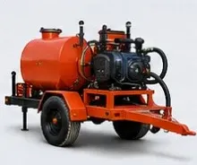
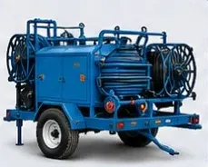
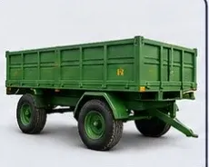
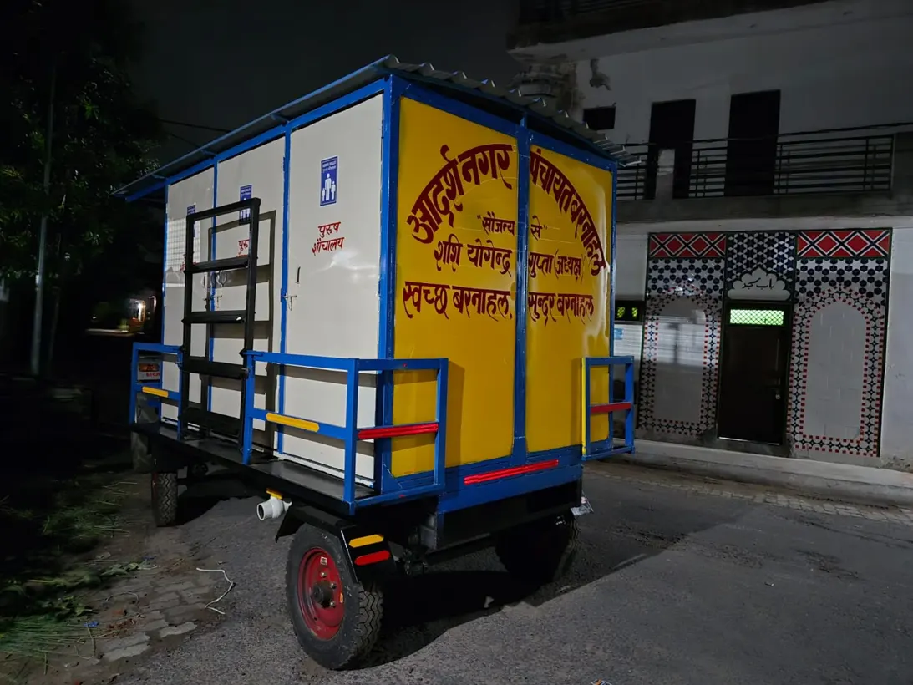

THE PRODUCT RANGE
Explore the equipment range
Browse by application and choose a product to start an enquiry.
9 items

Drain & road cleaning
Trailer-mounted suction machine
For suction-based cleaning and waste removal.
Enquire
Drain & road cleaning
Suction and jetting machine
A trailer-mounted unit for suction and water jetting.
Enquire



Public sanitation
Stainless-steel sanitation cabins
Enclosures for public sanitation facilities.
Enquire